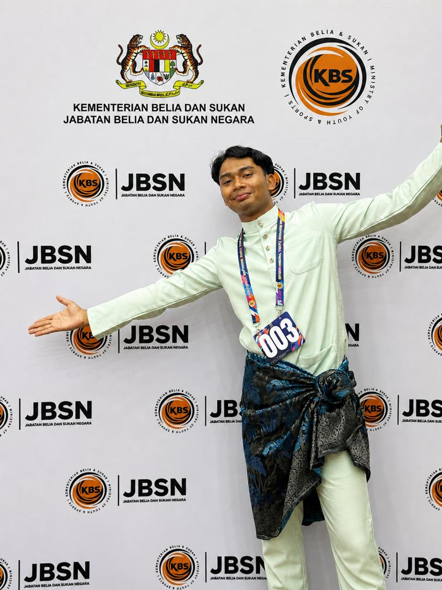

A passionate Information Technology student driven by creativity, leadership and continuous growth. I enjoy combining technology, digital media and community engagement to create meaningful experiences while inspiring others around me.
Current CGPA
Leadership Roles
Volunteer Hours
Technical Projects
I am currently pursuing a Diploma in Computer Science at Universiti Pendidikan Sultan Idris (UPSI), with strong interests in software development, creative media and student leadership.
Throughout my academic journey, I have actively participated in leadership positions, volunteer programmes, technical committees and independent projects that strengthened my communication, teamwork, organisational and problem-solving abilities.
I am passionate about continuous self-development and aspire to gain international exposure through youth exchange programmes while contributing meaningfully to technological innovation, youth empowerment and community growth.
Leading student activities, academic programmes, community projects and organisational development.
Managing technical operations, event setup, equipment preparation and technical support.
Producing media content, documenting programmes, supporting communication and volunteer initiatives.